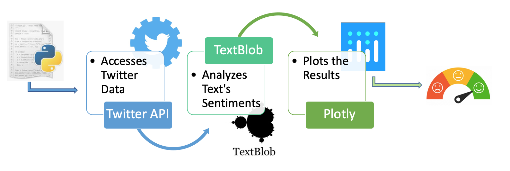

ABA Techshow 2019
Sentiment Analysis
Description
This is the analysis of a sample of tweets using the hashtag #ABATechShow.
The sentiment is determined by the text that accompanies the hashtag.
This helps us to understand if the context in which the hashtag was used was positive or negative.
It is also helpful for purposes of understanding the reaction from the audience towards content or events they make referece to, while using the hashtag.
In this particular case, 48.3% of tweets expressed weakly positive reactions to accompany the hashtag,
while 20.7% expressed positive reactions.
Only 13.8% used the hashtag to accompany weakly negative reactions.
The remaining 17.2% of reactions had a neutral text. Overall, the event had around 70% explicitly positive reactions from the audience.
Unfortunately, due to Twitter's API restrictions on retrieving historic data, the sample size might provide different results than when the event took place. This type of analysis are more reliable when performed in real time or while users are actively using the hashtag.
What The Code Does

Source Code